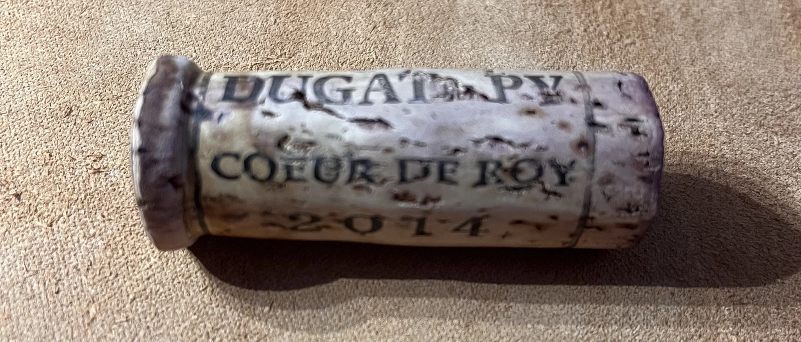

Monthly report - May 2022

Little by little I am getting back to mindful wine consumption. Ratio of total wines rated to total wines consumed is also getting back to normal - 59%. So according to my notes, this month I consumed 49 bottles and rated 29 of them. And all ratings are unique (e.g. no wine was rated twice).
Country-wise, this month wasn’t that fruitful, only 8 countries are present in my ratings. But there are several interesting points. Somehow Italy got to the first place with 9 wines rated. And despite the fact that during the last 3 months I’ve been drinking absurdly huge amount of Ukrainian wines, only one was rated, but what a wine - Vinoman BLU Pinot Noir 2019! And what amazes me the most, Chile is on the 3rd place with 5 wines rated. Look, I have nothing against Chile, but my last Chile wine rating was made on 2021-11-20 and before that on 2021-06-17. So not a common guest in my glass. And I must confess, this month I enjoyed some of the Sauvignon Blancs from there.
The youngest vintage rated is 2020 and it was rated 8 times, it’s the same amount of ratings 2019 got. The oldest vintage rated is 2013, and I am happy that it was Champagne - Lamiable Cuvee Pheerie 2013.
In terms of color and carbonation distribution it’s quite boring, but since I have this data, let me share it. This month I rated 14 white, 13 red and 2 rosé wines. 21 of all rated wines are still and 8 sparkling.
On the other hand, this month is fruitful in terms of grapes (pun intended). In total, I’ve rated 26 distinct grapes. And this is considering I’ve rated 29 wines in total! Top three are Pinot Noir (8), Sauvignon Blanc (5) and Chardonnay (4). But most importantly, this month I’ve tasted and rated Malvasía de Sitges for the first time in my memory (e.g. my system memory) - it was part of the blend in Raventós i Blanc Blanc de Blancs Extra Brut 2018.
Now to the most interesting part. My top list of the month.
- 8.5 Lamiable Cuvee Pheerie 2013 - almost 9 years old Champagne for 1377 UAH (~$46), that’s amazing QPR. Drink now.
- 8.5 Jacquesson Cuvée 744 Grand Vin (2016) NV - it’s still too young, and seems like it has amazing potential. Buy while it’s in stocks and store it for few years..
- 8.0 Weingut Bründlmayer Brut Rosé NV - one of my favourite sparkling rosé wines, consistently delivers for a good price.
- 8.0 Cascina Bertolotto Spumante Brut Metodo Classico NV - discovery of the month. Traditional sparkling from Piedmont that is almost 13 years old. And I found it by accident, it was hidden on a shelf behind some mainstream Champagne labels. Happy that I did!
- 8.0 Craggy Range Gimblett Gravels Syrah 2018 - my first Syrah from New Zealand and definitely not the last. I absolutely love the delicacy and complexity of this wine. Having its potential in mind I can only wonder how it evolve in few years.
So despite having rated only 8 sparkling wines, 4 of them are at the top. Who would expect that? And there are other interesting wines I rated this month, but now let’s take a look at the worst wines.
- 4.5 Cantina la Salute Sauvignon - it is not bad, just… well, at least buy it for adequate price.
- 5.0 Barton & Guestier Chardonnay Réserve 2019 - mediocre Chardonnay for those who want to feel oak pieces in their glass.
- 5.2 Sizarini Pinot Grigio 2020 - this one must be chilled as much as possible and enjoyed in a hot summer day. Add a nice view, and… ah wine! This one is for background.
Nothing that critical, just mediocre wines. So no witch hunting this month.
And I want to finish my report with one special mention. As you might know, Goodwine storage was destroyed at the beginning of the war. Estimated loss is 15 billion euros. Some wines survived physically, though they are completely spoiled. On the last day of May I had an opportunity to taste Gevrey-Chambertin Cuvée Cœur de Roy 2014 by famous Bernard Dugat-Py. This bottle ‘survived’ is the fires, though the label was completely ruined and we figured out what wine we opened only thanks to the writings on the cork.
I must note that I don’t really like Dugat-Py style. It’s powerful, expressive and stands out from other producers, but I find nothing sexy in this style. For example, there is Jean Grivot with expressive and unique style, but his wines are delicate and beautiful. Someone joked that Dugat-Py is Bourgogne for Bordeaux fans.
Nevertheless, I tasted this dead wine and in the flavours of burnt tires and paper, in this disintegrated and broken body I found solace. And I found comfort. It’s too early to extract feelings into words, but at least I know that my small world can carry on. Not by inertia, but at will.
Safe travels!